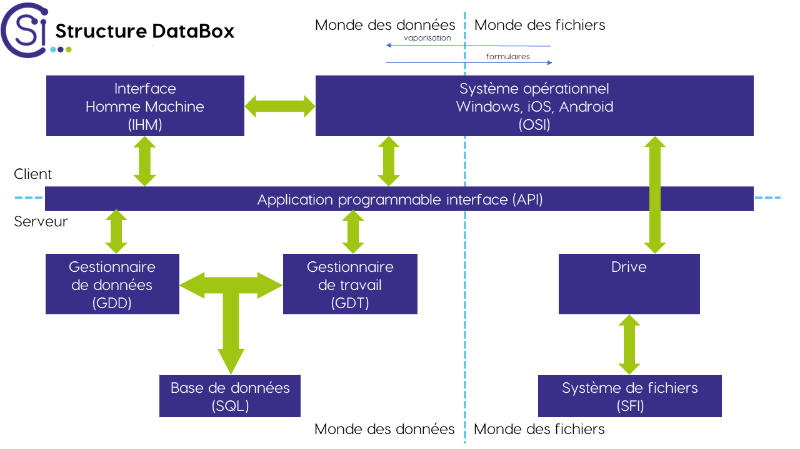

Cahier des charges
Préambule
Modalité des exigences
- Obligation (feu rouge)
- Cela veut dire de l'exigence doit être respectée à la lettre.
- Besoin (feu orange)
- Cela veut dire que l'exigence doit être respectée dans le contexte global du projet.
- Formalité (feu vert)
- Cela veut dire que le respect ou non-respect de l'exigence n'a aucun impact sur le projet.
Catégorie des exigences
- IHM: Interface homme-machine
- Consigner une exigence quant à la manière dont vous allez interagir avec votre système.
- GDD: Gestionnaire de données
- Consigner une exigence sur comment structurer vos données.
- GDT: Gestionnaire de travail
- Consigner une exigence en rapport avec les méthodes de travail.
- OSI: Système opérationnel
- Consigner une exigence si la databox interagit avec des OS.
- API: Interface entre applications
- Consigner une exigence si vous voulez une interaction entre deux logiciels/services.
- SFI: Système de fichiers
- Consigner une exigence par rapport à vos fichiers.

Liste des exigences
IHM: Interface Homme Machine
GDD: Gestionnaire de données
GDT: Gestionnaire de travail
OSI: Système opérationnel
API: Interface entre applications
SFI: Système de fichiers
Cahier des charges client